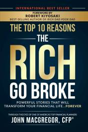

Top 10 Reasons the Rich Go Broke
AZW3 · EPUB · PDF
|  | |
| RDA Press, LLC | |
| 2020 | |
Learning from your mistakes makes you smart. Learning from other people’s mistakes makes you a genius.
There are two ways to share knowledge, you can push information out or you can pull them in with story. A good story well told, can change the world. After 25 years in the trenches working with thousands of individuals and small business owners, John MacGregor opens the vault on 10 incredible stories that have the power to transform your financial life forever. In this book MacGregor reveals 10 real-life stories of people he encountered who had everythng and lost it all. It is here, MacGreogor reveals for the first time “The B.E.A.R Trap”, THE four underlying reasons why so many people go and stay broke.
Using jaw dropping stories, this book answers and solves why:
•78% of people are living paycheck to paycheck
•65% of people could not come up with $400 today for an emergency expense
•Why money is the #1 source of stress in our society
•AND, why this problem is getting worse – not better - despite the thousands of how-to-books, DVD, and online resources available.
Unlike the thousands of traditional “how-to” personal finance books that use traditional methods that rarely elicit change in people, these stories elicit something deep within the reader that allows people to make meaningful transformations in their life.
The BEAR Trap formula is not only effective in your financial decision making, you can use it anywhere in your life to avoid painful outcomes and pitfalls.
Though this is about the rich going broke, the amount of money doesn’t matter as everyone of these stories can pertain to you and your family